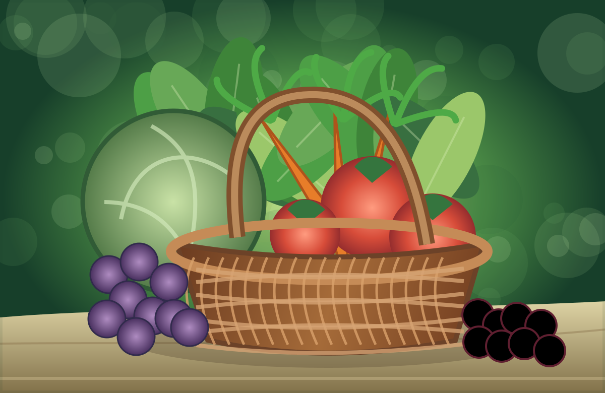

Farmer workspace
Post harvestBuyer requests
Review buyer inquiries, respond and arrange collection.
Sample inquiry data for UI preview — Java will supply real requests.
Buyer requests
1 total
Fresh Red Tomatoes
Buyer: Amaya Silva
25 kg · Rs. 6,000 estimated · Nov 11, 2026
pending